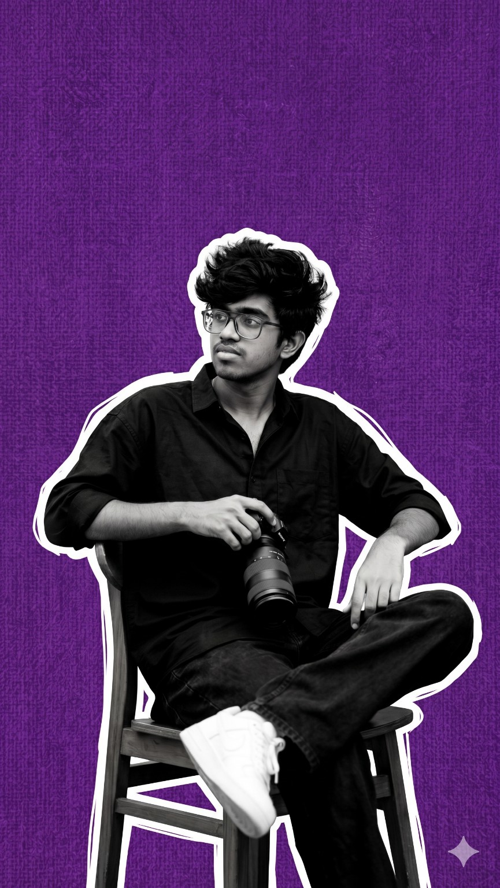

B.TECH · COMPUTER SCIENCE & ENGINEERING
The LNM Institute of Information Technology
Jaipur, Rajasthan
Hey, I'm Prajesh Sivakumar — a computer science student focused on cybersecurity, networking, and understanding how digital systems work. I'm pursuing a B.Tech in Computer Science and Engineering at LNMIIT and a BS in Management and Data Science at IIT Madras.

THINK · TEST · LEARNI'm pursuing a B.Tech in Computer Science and Engineering at LNMIIT, alongside the BS in Management and Data Science at IIT Madras (Foundation Level). My interests include cybersecurity, computer networks, and software development.
I'm building my foundations through programming, networking concepts, and hands-on security challenges. I’m especially interested in learning how vulnerabilities happen, how systems can be tested responsibly, and how to make software more secure.
My academic path combines computer science with management and data science.
Jaipur, Rajasthan
Foundation Level
A snapshot of the areas I'm studying and practicing as I grow.
C · Python · JavaScript
Networking fundamentals · CCNA studies
CTF challenges · Web security fundamentals
HTML · CSS · JavaScript
These are learning areas, not claims of professional certification or expertise.
This space is for real projects, CTF write-ups, networking experiments, and security learning notes. I'll add each one with its objective, tools, and what I learned.
Cybersecurity is about understanding systems and helping protect them. I'm interested in exploring security concepts through legal labs, CTF platforms, and other authorized environments while strengthening my programming and networking fundamentals.
EXPLORE MY GITHUB ↗